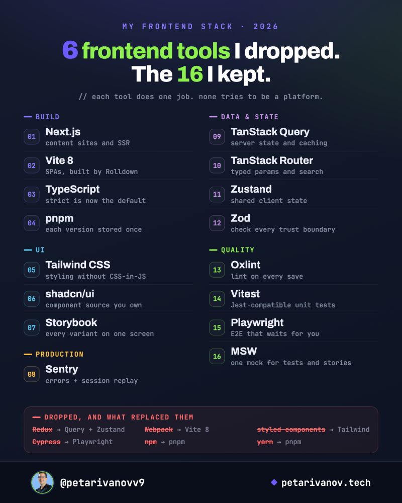

Frontend Toolchain¶
A 2026 frontend stack: what one experienced developer dropped, what replaced each tool, and the 16 tools that stayed. The post is the starting point; the sections after it explain why each swap happened and when it would be the wrong choice for you.
For the wider picture of languages and stacks, see Tech Stacks. For general tool habits, see Tools.
Source
Petar Ivanov, "6 frontend tools I dropped this year (and the 16 I kept)", LinkedIn, 2026-10-20. https://www.linkedin.com/posts/petarivanovv9_6-frontend-tools-i-dropped-this-year-and-activity-7518280845837918208-IrXx. Read on 2026-10-22.

Image: © Petar Ivanov (@petarivanovv9, petarivanov.tech), from the post above.
What the post says¶
Every tool on the card does one job and doesn't try to be a platform. That's why I can swap one out without touching the rest.
Dropped, and what replaced them¶
| Dropped | Replaced by | Reason given in the post |
|---|---|---|
| Redux | TanStack Query + Zustand | Server data moved to TanStack Query, shared client state to Zustand. "Two small tools with one job each beat one store that tries to do both." |
| Webpack | Vite 8 | Vite 8 builds with Rolldown, a Rust bundler. SPA builds went from 30+ seconds to under 10, with no separate Babel setup. |
| styled-components | Tailwind CSS + shadcn/ui | shadcn/ui copies component source into the repo, so you own it. styled-components went into maintenance mode in March 2025. |
| Cypress | Playwright | Playwright waits for elements by itself (no setTimeout hacks), and its trace viewer replays a failed run click by click. |
| npm and yarn | pnpm | pnpm keeps one copy of each package version on the machine. Duplicate node_modules went from 40 GB to under 5 GB. |
The 16 kept¶
| Area | Tool | Job |
|---|---|---|
| Build | Next.js | Content sites and SSR |
| Vite 8 | SPAs, built by Rolldown | |
| TypeScript | strict is now the default |
|
| pnpm | Each package version stored once | |
| UI | Tailwind CSS | Styling without CSS-in-JS |
| shadcn/ui | Component source you own | |
| Storybook | Every variant on one screen | |
| Production | Sentry | Errors + session replay |
| Data & state | TanStack Query | Server state and caching |
| TanStack Router | Typed params and search | |
| Zustand | Shared client state | |
| Zod | Check every trust boundary | |
| Quality | Oxlint | Lint on every save |
| Vitest | Jest-compatible unit tests | |
| Playwright | E2E that waits for you | |
| MSW | One mock for tests and stories |
Four picks the post singles out:
- TypeScript 6 turned strict mode on by default. "Don't turn it off."
- Oxlint finishes in under a second where ESLint took 15, so lint runs on every save.
- MSW lets one mock handler serve Vitest, Playwright, and Storybook, so each mock is written once.
- Sentry links every production error to a replay of the session. A bug the author had stared at for two hours took 5 minutes to close.
Next.js and TanStack Router? They never share an app. Next.js runs content sites, and Vite + TanStack runs SPAs.
Going deeper¶
The idea behind every swap¶
Most of the six swaps share one of three reasons:
| Reason | Swaps |
|---|---|
| Split one tool that did two jobs | Redux → Query (server state) + Zustand (client state) |
| A native-speed rewrite of the same job | Webpack → Vite 8 / Rolldown (Rust); ESLint → Oxlint (Rust) |
| Move work from runtime to build time | styled-components → Tailwind (CSS generated at build, no runtime style injection) |
The Cypress → Playwright and npm → pnpm swaps are simply better tools for the same job.
Server state vs. client state (Redux → Query + Zustand)¶
The real lesson isn't "Redux is bad". It's that data you fetched from a server is a cache, not state you own. A cache needs things a general store doesn't give you for free: deduplicating identical requests, refetching when stale, retrying, invalidating after a mutation, and pagination. TanStack Query does all of that1. What's left over (a modal being open, a theme, a cart draft) is usually small enough for Zustand, React context, or the URL.
When Redux still fits: a large app with complex client-side state transitions (editors, offline-first apps), or a team that values Redux DevTools' time-travel debugging. Modern Redux Toolkit with RTK Query also covers the server-cache half2.
Bundlers (Webpack → Vite 8)¶
Vite 8 went stable on 2026-03-12. It replaced its two previous bundlers (esbuild for development, Rollup for production) with Rolldown, one Rust bundler that keeps Rollup's plugin API. The Vite team reports "10–30× faster" than Rollup in benchmarks; Linear's production build went from 46s to 6s3. @vitejs/plugin-react v6 also dropped Babel as a dependency, which matches the post's "no separate Babel setup".
When Webpack still fits: large existing apps that depend on Webpack-only plugins or Module Federation setups that are expensive to migrate. Vite 8 now supports Module Federation too, so check before assuming you're stuck.
Styling (styled-components → Tailwind + shadcn/ui)¶
- Why CSS-in-JS fell out of favour: runtime libraries like styled-components inject styles while the page renders, which costs time on every render and doesn't fit React Server Components, which render on the server without a client runtime. Tailwind generates plain CSS at build time.
- styled-components' status: its maintainer put it into maintenance mode on 2025-03-17 and advised against adopting CSS-in-JS for new projects4. A March 2026 update reports a working React Server Components setup in a 6.4 release candidate5, so existing users have a way forward. It is still not a choice for a new project.
- shadcn/ui is not a package you install. Its CLI copies each component's source into your repo6. You can edit anything, but you also maintain it: upstream fixes don't arrive with
npm update.
Testing (Cypress → Playwright, plus Vitest and MSW)¶
- Auto-waiting: Playwright checks an element is visible, stable, enabled, and receiving events before acting, so tests don't need manual sleeps7.
- Trace viewer: a failed CI run produces a trace with DOM snapshots, network, and console for every step8. Turn it on with
trace: 'on-first-retry'so it only costs time when something fails. - More browsers: Playwright drives Chromium, Firefox, and WebKit (Safari's engine) from one API.
- MSW intercepts at the network level: a Service Worker in the browser, request interception in Node9. So the same handler works in unit tests, E2E tests, Storybook, and local development without a fake server.
Package managers (npm/yarn → pnpm)¶
pnpm stores every package version once in a content-addressable store and hard-links it into each project's node_modules10. That's where the 40 GB → 5 GB saving comes from. Its stricter layout also blocks phantom dependencies: code can only import packages listed in its own package.json, not something a dependency happened to pull in.
Linting (ESLint → Oxlint)¶
Oxlint is part of the Oxc toolchain (the same team as Rolldown) and implements hundreds of ESLint rules natively in Rust11. It doesn't yet cover every ESLint plugin. A common setup runs Oxlint on every save and keeps ESLint in CI for the rules Oxlint lacks, with eslint-plugin-oxlint turning off the rules that would run twice.
TypeScript 6: strict by default¶
TypeScript 6.0 changed the default of strict to true12. If you already set "strict": true, nothing changes. If an older project relied on the loose default, upgrading surfaces new errors. Fix them, or set "strict": false explicitly and turn the strict flags on one at a time.
Zod: validate at trust boundaries¶
TypeScript types disappear at runtime, so they can't protect you from data you didn't write: API responses, form input, URL params, localStorage, environment variables. Zod parses unknown data into a typed value or fails loudly13, and its schema can be the single source for both the runtime check and the static type (z.infer).
How to use this list¶
- Don't migrate because a post did. Each swap here fixed a specific pain for the author. Measure your own: build time, lint time, flaky test count, disk usage.
- Swap one tool at a time and keep the old one until the new one has run in CI for a while.
- Cheapest wins first: pnpm and Playwright are usually low-risk swaps. Redux and styling migrations touch the most code, so do them last and in steps.
- Check the dates. Frontend tooling changes fast; this card is a snapshot of October 2026.
References¶
-
TanStack. TanStack Query: Overview. tanstack.com/query/latest/docs/framework/react/overview. ↩
-
Redux. RTK Query Overview. redux-toolkit.js.org/rtk-query/overview. ↩
-
Vite Team. Vite 8.0 is out! 2026-03-12. vite.dev/blog/announcing-vite8. ↩
-
E. Jacobs. Thank you. styled-components on Open Collective, 2025-03-17. opencollective.com/styled-components/updates/thank-you. ↩
-
E. Jacobs. A Whole New World. styled-components on Open Collective, 2026-03-27. opencollective.com/styled-components/updates/a-whole-new-world. ↩
-
shadcn. Introduction. ui.shadcn.com/docs. ↩
-
Playwright. Auto-waiting. playwright.dev/docs/actionability. ↩
-
Playwright. Trace viewer. playwright.dev/docs/trace-viewer. ↩
-
Mock Service Worker. Philosophy. mswjs.io/docs/philosophy. ↩
-
pnpm. Motivation. pnpm.io/motivation. ↩
-
Oxc. Oxlint. oxc.rs/docs/guide/usage/linter. ↩
-
Microsoft. Announcing TypeScript 6.0. TypeScript Blog. devblogs.microsoft.com/typescript/announcing-typescript-6-0. ↩